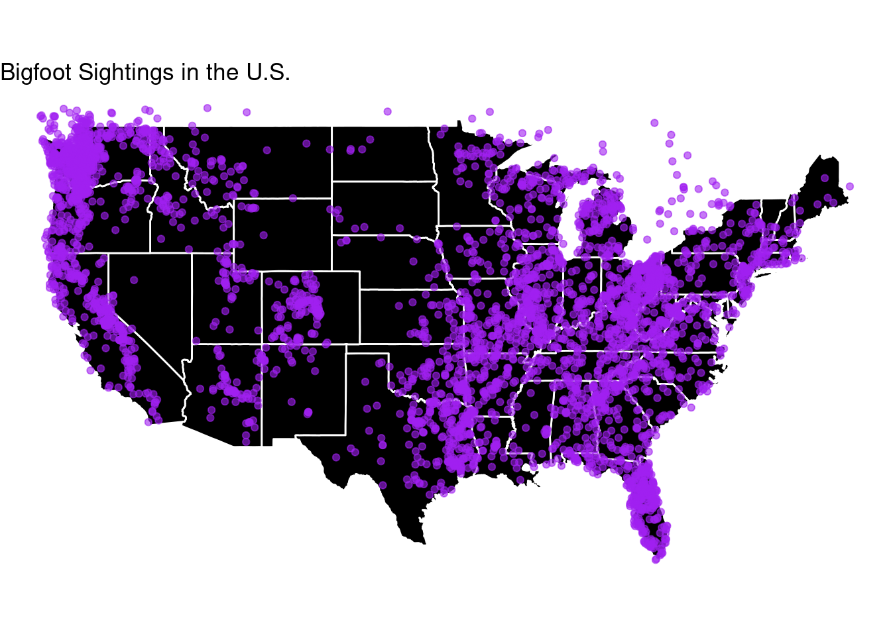
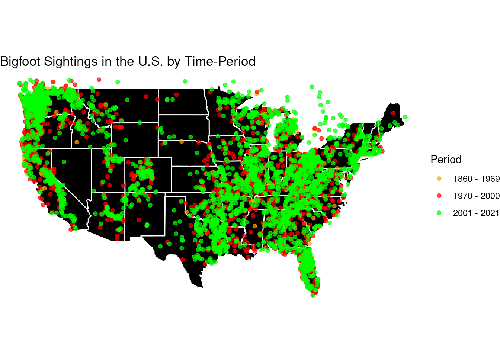
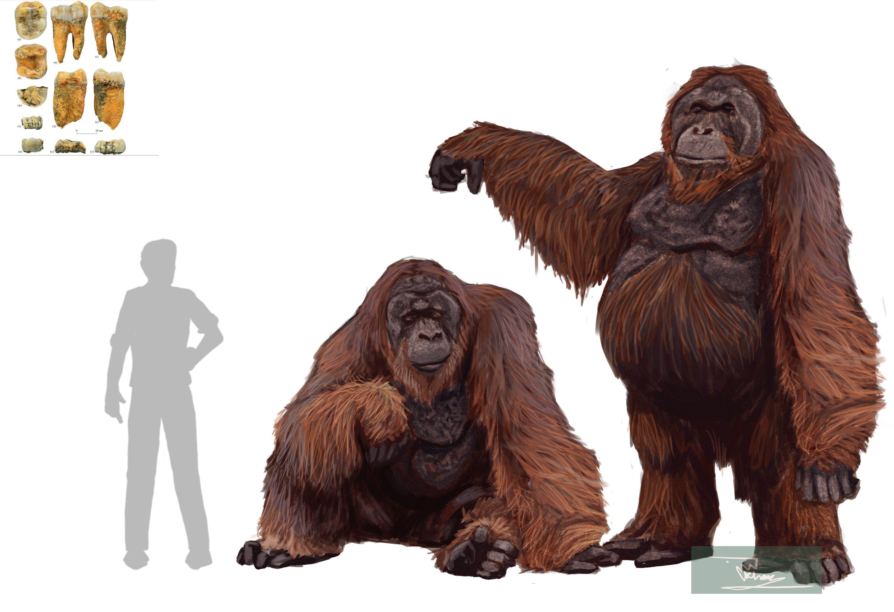
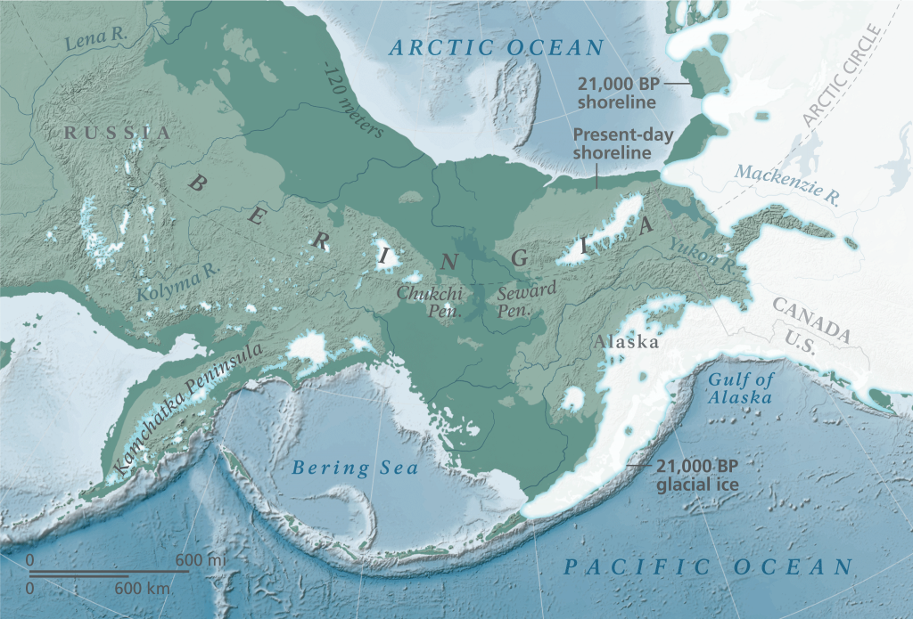
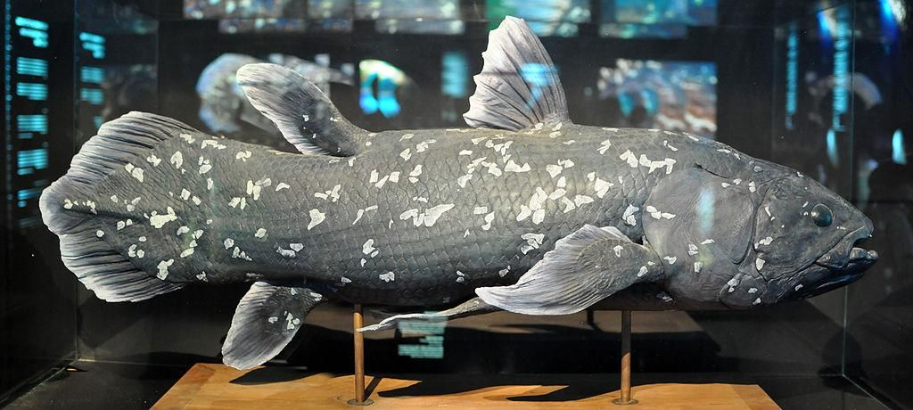

Are Bigfoot sightings geographically clustered in specific regions or habitats? as a believer in Bigfoot In interested in seeing where they are mostly located. I will be using data from Bigfoot sighting in the United States to determine some of the sightings and their coloration with their respected regions. I will want to see if those sightings have changed over the years, in order to understand if those regions aren’t as suitable as they used to be.
My honest prediction is that we will usually find sasqautches in nice forest or mountain terrains due to them resembling that of a giant ape. What we know about apes is that they need need a nice rain-forest climate and terrain, these creatures will have better chances at surviving in a tropical region than a dessert region. But id like to think that slowly as we uncover more recent sightings we will see a shift in those regions. Since some animals have to migrate in order to adapt and survive and due to human activity, climate change or other factors. I believe that some of these newer sightings will show some Sasquatches in areas that don’t seem like a preferable place for a giant ape.
I will be using Bigfoot Sightings data from Kaggle collected by the foot Field Researchers Organization
Approach
The data used for this project comes from Kaggle and it is called Bigfoot Sightings made by Tim Renner
The data was collected from BigfootFieldResearchersOrganization which contains sighting details including report numbers along with classification titles depicting incident nature such as direct sighting or tracks found etc.
the data set includes three files, I will be using bfro_reports_geocoded.csv
bfro_report_locations.csv
Column name
Description
observed
The date and time of the sighting. (DateTime)
location_details
The specific location of the sighting. (String)
county
The county in which the sighting occurred. (String)
state
The state in which the sighting occurred. (String)
season
The season in which the sighting occurred. (String)
title
The title of the sighting report. (String)
latitude
The latitude of the sighting. (Float)
longitude
The longitude of the sighting. (Float)
number
The report number of the sighting. (Integer)
classification
The classification of the sighting. (String)
geohash
The geohash of the sighting. (String)
temperature_high
The high temperature on the day of the sighting. (Float)
temperature_low
The low temperature on the day of the sighting. (Float)
dew_point
The dew point on the day of the sighting. (Float)
cloud_cover
The cloud cover on the day of the sighting. (Float)
moon_phase
The moon phase on the day of the sighting. (String)
precip_intensity
The precipitation intensity on the day of the sighting. (Float)
precip_probability
The precipitation probability on the day of the sighting. (Float)
precip_type
The type of precipitation on the day of the sighting. (String)
pressure
The atmospheric pressure on the day of the sighting. (Float)
summary
A summary of the weather conditions on the day of the sighting. (String)
visibility
The visibility on the day of the sighting. (Float)
wind_bearing
The wind bearing on the day of the sighting. (Integer)
wind_speed
The wind speed on the day of the sighting. (Float)
bfro_reports.json
Column name
Description
YEAR
Year of the sighting. (Integer)
SEASON
Season of the sighting. (String)
STATE
State of the sighting. (String)
COUNTY
County of the sighting. (String)
NEAREST_TOWN
Nearest town to the sighting. (String)
NEAREST_ROAD
Nearest road to the sighting. (String)
OBSERVED
Description of what was observed. (String)
ALSO_NOTICED
Any other details noticed during the sighting. (String)
OTHER_WITNESSES
Any other witnesses to the sighting. (String)
OTHER_STORIES
Any other stories related to the sighting. (String)
TIME_AND_CONDITIONS
Time and conditions of the sighting. (String)
ENVIRONMENT
Environment of the sighting. (String)
REPORT_NUMBER
Report number of the sighting. (Integer)
REPORT_CLASS
Classification of the sighting. (String)
LOCATION_DETAILS
Location details of the sighting. (String)
MONTH
Month of the sighting. (Integer)
DATE
Date of the sighting. (Integer)
A_&_G_References
Any references to the sighting. (String)
bfro_reports_geocoded.csv
Column name
Description
number
The report number of the sighting. (Integer)
title
The title of the sighting report. (String)
classification
The classification of the sighting. (String)
latitude
The latitude of the sighting. (Float)
longitude
The longitude of the sighting. (Float)
timestamp
The date and time of the sighting. (Datetime)
There are currently 6 columns as the file includes number that has a maximum of 4251 rows, title, classification the determines if they are a class A or class B, longitude and latitude for the coordinates of the sighthing , and a time stamp to tell us the date of the sighting.
Tools
Programming Language: R
IDE: RStudio (Posit.Cloud)
Approach/Predictions
Filter the data that focuses on sightings within the United States.
Map the geographic sightings using latitude and longitude coordinates.
Analyze how the location sightings have changed over time.
Examine the relationship between sightings and environmental factors such as terrain type (forest, mountain, desert).
Repeat your predictions, but with more specificity (e.g. I predict that residents will have at least 1 point higher median score on the subjective-well being score than commuters).
Results
Sightings Chart:
library(ggplot2)library(readr)library(dplyr)
Attaching package: 'dplyr'
The following objects are masked from 'package:stats':
filter, lag
The following objects are masked from 'package:base':
intersect, setdiff, setequal, union
library(maps)bfro_locations <-read_csv("../../bfro_locations.csv", show_col_types =FALSE)bfro_usa <- bfro_locations %>%filter(longitude >-125, longitude <-66, latitude >24, latitude <50)us_map <-map_data("state")ggplot() +geom_polygon(data = us_map, aes(x = long, y = lat, group = group),fill ="black", color ="white") +geom_point(data = bfro_usa, aes(x = longitude, y = latitude),color ="purple", size =1.5, alpha =0.6) +coord_fixed(1.3) +theme_void() +labs(title ="Bigfoot Sightings in the U.S.")

Description: This picture shows all the places where people said they saw Bigfoot in the U.S. The purple dots show the sightings, from different time period. Most of the dots are in places with lots of trees and mountains which tells us that it behaves like an actual ape. as we look at the map below we can see the different types of biomes in the United States and can see they have mostly been seen in tropical biomes. Which kind of proves my theory of them being primates.
Rows: 4250 Columns: 7
── Column specification ────────────────────────────────────────────────────────
Delimiter: ","
chr (2): title, classification
dbl (4): index, number, latitude, longitude
dttm (1): timestamp
ℹ Use `spec()` to retrieve the full column specification for this data.
ℹ Specify the column types or set `show_col_types = FALSE` to quiet this message.
bfro_usa <- bfro_locations %>%filter(longitude >-125, longitude <-66, latitude >24, latitude <50)bfro_usa_periods <- bfro_usa %>%arrange(timestamp)bfro_usa_periods$years <-as.numeric(format(as.Date(bfro_usa_periods$timestamp), "%Y"))bfro_usa_periods <- bfro_usa_periods %>%mutate(period =case_when( years >1800& years <1970~"1860 - 1969", years >=1970& years <=2000~"1970 - 2000", years >2000& years <=2021~"2001 - 2021" ))us_map <-map_data("state")ggplot() +geom_polygon(data = us_map, aes(x = long, y = lat, group = group),fill ="black", color ="white") +geom_point(data = bfro_usa_periods %>%filter(period !="Other"),aes(x = longitude, y = latitude, color = period),size =1.5, alpha =0.7) +coord_fixed(1.3) +theme_void() +labs(title ="Bigfoot Sightings in the U.S. by Time-Period",color ="Period") +scale_color_manual(values =c("1860 - 1969"="orange","1970 - 2000"="red","2001 - 2021"="green" ))

Description: the dots represent the different time periods in which the sightings became more popular. I think that when the first video was captured of Bigfoot via the Patterson films in 1967 it gave rise to the Sasquatch and thus it got so popular that people began claim that they’ve seen something like it. Which leads be to say that some of the sightings that are presented on this map might not be totally accurate.
Gigantopithecus:

beringia:

coelacanth: 1938

Conclusion:
Most of these Bigfoot sightings happen in forest and mountain areas, which confirms my suspicion that Bigfoot might be less than a myth and legend and rather more of an undiscovered type of ape.
Discussion
The map shows that most Bigfoot sightings happen in places with lots of trees and mountains, like Washington, Oregon, and Northern California. This matches my idea that Bigfoot likes to live in forests and mountains, just like big apes do. But, some sightings also happen in places where you wouldn’t expect Bigfoot, like parts of the Midwest and the Southeast. Maybe Bigfoot is moving to new places, or people are seeing things by mistake.
I now believe more in the theory that Bigfoot is a descendant of Gigantopithecus blacki due to it liking places with lots of trees and food. Also due to the fact that it does not get into hot places such as dessert or grasslands as it would rather prefer trees.
I strongly believe in my hypothesis because the map shows most sightings in forests and mountains and other grassy terrains. However I am getting ahead of myself since we should look more at how sightings change over time and with weather or land type. Could this be caused by global warming? less food choices? or human activity?
i dont believe in my idea less, however there are some things that make me question my own data. Since some sightings due appear to be in weird places, some sightings could have been fabricated or people could have seen something else. The human brain does tend to trick their own mind to see something that wasn’t there in the first place